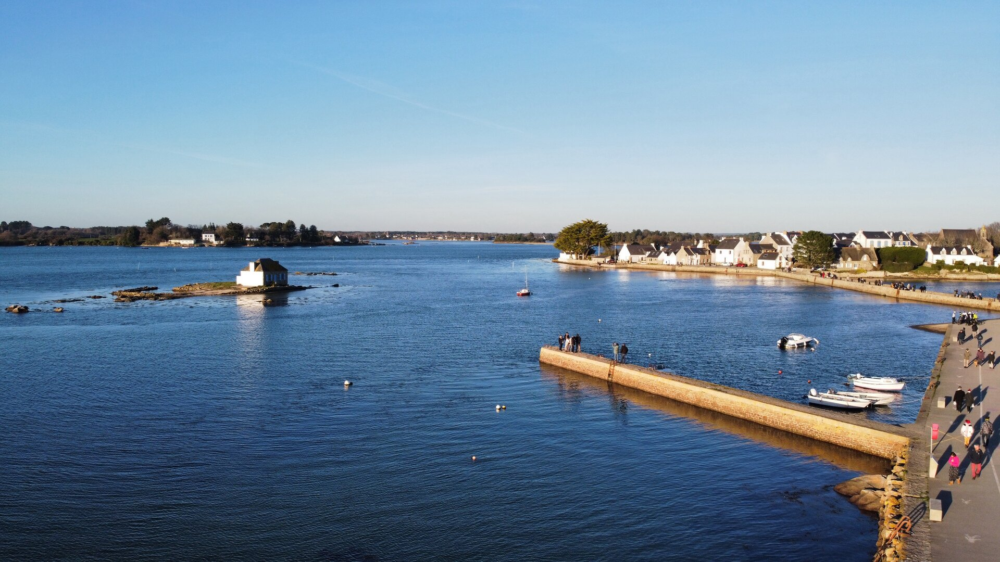
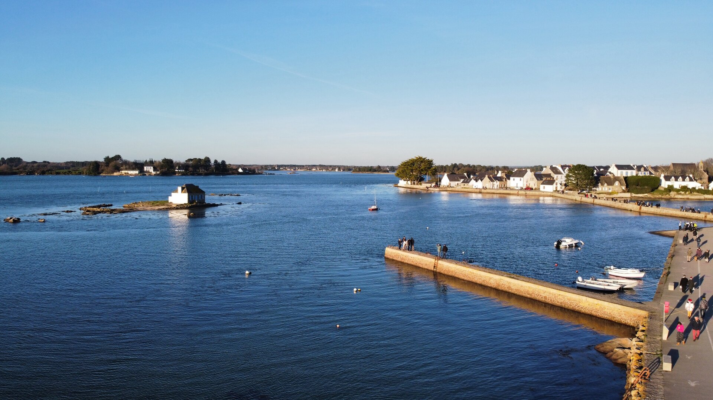

Ultra 80km
- Distance : 80 km
- Dénivelé : à définir
- Barrière horaire : à définir
 

Découvrez les paysages exceptionnels de la Ria d'Étel, un bras de mer unique en Bretagne, entre terre et océan. Courez le long de ses rives sauvages, traversez ses villages de caractère et admirez la célèbre maison de Nichtarguer sur son îlot.